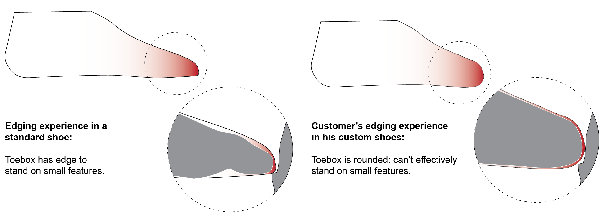
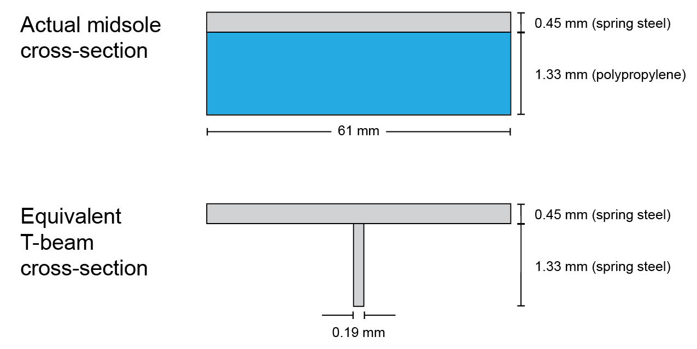
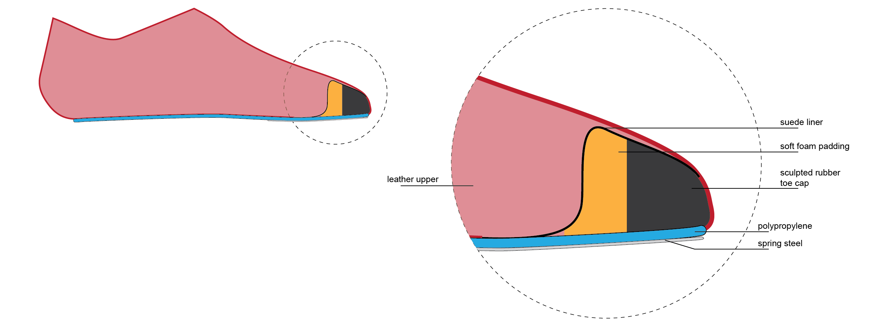
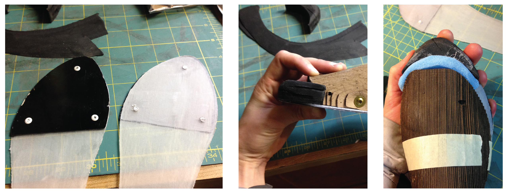
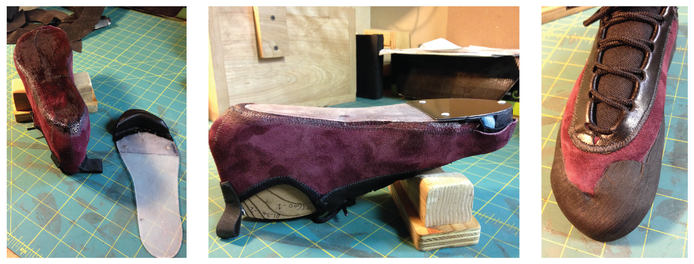
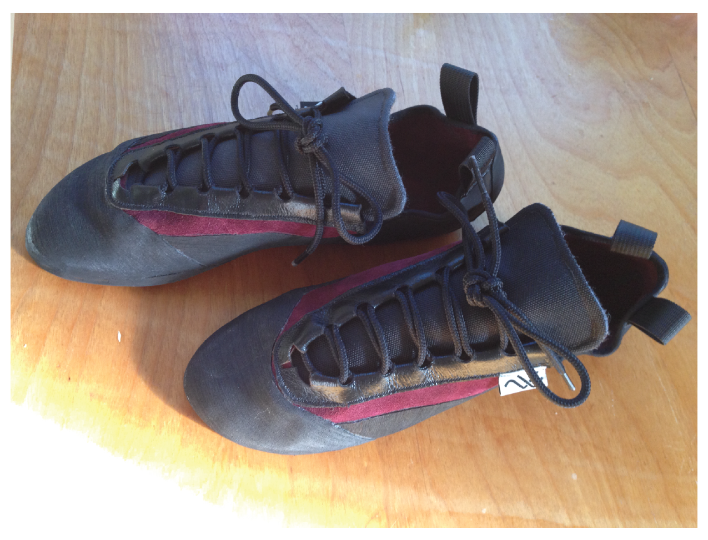

A customer approached SFT about making shoes for him; his first through third toes on both feet were amputated after experiencing frostbite. He already had custom shoes made from casts of his feet, but these shoes' toeboxes were too rounded, limiting his ability to edge (stand on small rock features) or crack climb (requires wedging the toebox into a crack and twisting one's foot to create a camming effect).
The material and geometry of the midsole will control the flexibility of the toebox, so I began by analyzing the midsole as a cantilevered beam, loaded with the worst-case scenario (the customer's full weight applied to the tip of the toebox).
Simplifying assumptions:
Preliminary analysis suggested that to be stiff enough, a plastic-only midsole would push the yield strength of the material. I decided to build the midsole out of polypropylene sheet (since it had close to the desired modulus and yield strength) riveted to spring steel shim stock (to keep the plastic from yielding).
With the above assumptions and material choices, I calculated how long the midsole "beam" should be to provide the desired tip deflection with the standard beam bending equation:
\delta = \frac{PL^3}{3EI}
where δ = deflection, P = load, L = beam length, E = Young's Modulus, and I = area moment of inertia.
To simplify the calculation, I treated the plastic-and-metal composite beam as a T-beam of steel alone. The cross-bar of the T had the dimensions of the original steel part, and the vertical of the T had the thickness of the plastic part and the equivalent width of steel to yield the same bending stiffness as the original plastic part alone. This resulted in a T-beam with the dimensions shown in the image:

The equivalent T-beam has an area moment of inertia of about 0.699 mm4. Solving for the beam length:
L = \sqrt[3]{\frac{3EI\delta}{P}}
L = \sqrt[3]{\frac{3(200 GPa)(0.699 mm^4)(7 mm)}{750 N}}
L \approx 16 mm
Therefore, the midsole should extend about 16 mm beyond the end of the customer's natural foot for the toebox of his shoes to have similar flexibility to OTS shoes and allow the customer to edge comfortably.

Shoe design cross-section.

Spring steel parts riveted to polypropylene midsoles. Sculpted toe cap shown in position on midsole next to last. Last shown with sculpted toe cap and foam padding.

Midsole assembly with suede liner, waiting for contact cement to dry. Midsole assembly bonded to lasted upper. Shoe with the rand applied.

The customer said: "They fit great! The stiffness seems to be right. If I’m not climbing 5.11c again this summer, I don’t expect to be able to blame the shoes!"